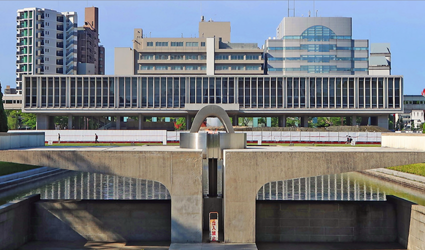

Tragedy
noun | trag·e·dy | tra-jə-dē
"A disastrous event or calamity."
- Marriam-Webstar(1)
"Japan learned from the bombings of Hiroshima and Nagasaki that the tragedy wrought by nuclear weapons must never be repeated and that humanity and nuclear weapons cannot coexist."
- Daisaku Ikeda
Tsutumu Yamaguchi was a Japanese who lived in Nagasaki. He was in Hiroshima for some work on the 6th of August 1945. Suddenly, he saw a tremendous flash which he describes as, "a thousand lightning at the same time. And right after the flash came a trmendous explosion." He later said that, "when the noise and he blast has subsided, I saw a huge mushroom-shaped pillar of fire rising up high into the sky." He decided to go back to his home, which was in Nagasaki, where another version of Little Boy was yet to come. When he was in the train station, he saw lots of dead-bodies floating on the water like what he called "blocks of wood." He described these dead bodies in his later interviews. He said, "their skin had peeled, their flesh was wet and mushy, and they had no faces. Their eyes, noses and mouths had been burnt away and it looked like their ears had melted off. On the day of the bombing, Einstein called the letter to president, Franklin, the greatest mistake of his life. He said, "Only if I had known the Germans couldn't make a nuclear bomb, I wouldn't have said a word."

Flame of Peace
Situated in the Hiroshima Peace Park, The Hiroshima Flame of Peace is a monument dedicated to the victims of the tragedy. It has been burning since August 1st, 1964. It will remain lit until all nuclear bombs on the planets are destroyed and the planet is free from the dangerous triumphs of science.